Chapter 3
Demand and Supply
Demand and supply curves show how buyers and sellers respond to possible prices and how their choices change when other conditions change.
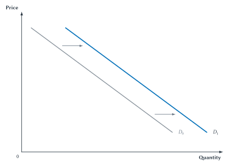
Suppose Maya buys four iced coffees each week when the price is $5 per cup. That is one choice at one price. Yet an economist may draw a demand curve showing how many cups Maya would buy at $2, $3, $4, and several other prices.
Where do those other points come from if the coffee shop charges only one price today?
They come from a series of what-if questions. How many cups would Maya buy if the price were $8? What if it were $7? What if it were $2? For each question, we hold Maya’s income, preferences, schedule, and other choices fixed. We change only the price of iced coffee.
This is the basic idea behind demand and supply curves. They are not merely lines to memorize. They are compact pictures of how choices would change as one condition changes. Demand describes buyers. Supply describes sellers. Later, Chapter 4 will put the two sides together. First, we need to understand what each curve means on its own.
Demand Begins With A Set Of Choices
A demand schedule is a table showing how much of a good a buyer is willing and able to buy at different possible prices during a given period. Table 3.1 shows Maya’s weekly choices.
| Point | Price Per Cup | Cups Demanded Per Week |
|---|---|---|
| A | $8 | 1 |
| B | $7 | 2 |
| C | $6 | 3 |
| D | $5 | 4 |
| E | $4 | 5 |
| F | $3 | 6 |
| G | $2 | 7 |
Table 3.1. Maya’s weekly demand schedule. Each row answers a different what-if question about the price of iced coffee. The rows do not describe seven different weeks.
At $8, Maya buys one cup. At $5, she buys four. At $2, she buys seven. These choices assume that the other important parts of Maya’s situation stay the same.
Economists sometimes express that last condition with the Latin phrase ceteris paribus, meaning “other things equal.” The phrase may sound formal, but the idea is simple: change one thing at a time so we can see what it does.
Quick Concept
A Curve Is A Set Of What-If Statements
Each point asks what quantity a buyer or seller would choose at a possible price, with other important conditions unchanged. The curve is not a timeline of what happened.
Figure 3.1 turns the rows of Maya’s schedule into points on a graph. Price appears on the vertical axis. Quantity appears on the horizontal axis. Connecting the points gives Maya’s demand curve.
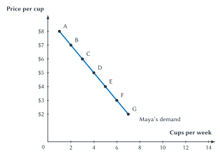
Figure 3.1. Maya’s demand for iced coffee. As the price falls, Maya is willing and able to buy more cups per week, with other conditions unchanged.
Demand And Quantity Demanded
Demand is the whole relationship between price and the quantities a buyer is willing and able to purchase. Quantity demanded is the amount the buyer chooses at one particular price.
That difference in wording matters. If the price falls from $7 to $5, Maya moves from point B to point D. Her quantity demanded rises from two cups to four cups. Her demand curve has not changed. She has moved to a different point on the same curve.
Quick Concept
Demand Is Willingness To Buy
A demand curve shows how much buyers are willing and able to purchase at different possible prices.
The law of demand says that, with other conditions unchanged, a higher price leads to a smaller quantity demanded and a lower price leads to a greater quantity demanded. That is why a demand curve slopes downward.
There is a simple reason. Maya has a limited budget and many ways to use it. When iced coffee becomes more expensive, other drinks and other purchases become more attractive. Her money also buys less than before. She gives up some cups. When iced coffee becomes cheaper, more cups become worth buying.
This connects demand to the marginal reasoning from Chapter 1. Maya compares the benefit of one more cup with what that cup costs. The first cup of the week may be very valuable to her. Later cups may matter less. A high price makes only the most valued cups worth buying. A lower price makes additional cups worth buying as well.
Common Mistake
Do Not Read A Curve As A Timeline
A line connecting several price-and-quantity pairs does not mean Maya moved through those points over time. It shows alternative choices under the same other conditions.
From One Buyer To Market Demand
Maya is not the only buyer. Jordan has a different weekly demand schedule. At each price in this simple example, Jordan buys one fewer cup than Maya.
| Point | Price Per Cup | Cups Demanded Per Week |
|---|---|---|
| A | $8 | 0 |
| B | $7 | 1 |
| C | $6 | 2 |
| D | $5 | 3 |
| E | $4 | 4 |
| F | $3 | 5 |
| G | $2 | 6 |
Table 3.2. Jordan’s weekly demand schedule. Buyers can choose different quantities at the same price.
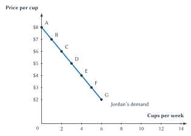
Figure 3.2. Jordan’s demand for iced coffee. Jordan’s choices differ from Maya’s, but the same law of demand applies.
To construct market demand, hold the price fixed and add the quantities demanded by all buyers in the market. With only Maya and Jordan, the arithmetic is easy.
| Point | Price Per Cup | Maya | Jordan | Market Quantity Demanded |
|---|---|---|---|---|
| A | $8 | 1 | 0 | 1 |
| B | $7 | 2 | 1 | 3 |
| C | $6 | 3 | 2 | 5 |
| D | $5 | 4 | 3 | 7 |
| E | $4 | 5 | 4 | 9 |
| F | $3 | 6 | 5 | 11 |
| G | $2 | 7 | 6 | 13 |
Table 3.3. Building market demand. At each price, add Maya’s quantity and Jordan’s quantity. At $5, for example, \(4 + 3 = 7\) cups.
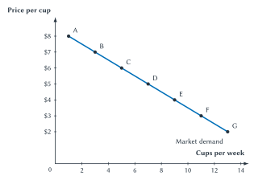
Figure 3.3. Market demand is the sum of individual demands. The market curve adds quantities at the same price. It is not an average of the two buyers.
This method is called horizontal summation because quantity appears on the horizontal axis. The name matters less than the rule: choose one price, then add quantities.
In a real market, the addition may include thousands or millions of buyers. No one chooses “market demand.” The market demand curve has no mind of its own. It is the sum of choices made by separate buyers facing the same possible prices.
The result also depends on how we define the market. Demand for iced coffee at one campus coffee stand is not the same as demand for iced coffee throughout Buffalo. Weekly demand is not the same as daily demand. A delivery app may bring new buyers within reach of a seller. Before measuring a market curve, we must decide which product, buyers, place, and time period belong in the market.
Key Point
Market Curves Emerge From Individual Choices
At each price, market quantity is the sum of the quantities chosen by individual buyers or sellers. No single participant chooses the market curve.
How Can Economists Learn About Choices We Do Not See?
Maya’s and Jordan’s schedules are invented to make the ideas easy to see. Real businesses do not usually know every point on a market demand curve. They observe choices at prices that actually occur.
Even those observations require care. Suppose iced coffee costs $5 on a cool Monday and $6 on a hot Friday. If sales rise on Friday, that does not prove that a higher price raised quantity demanded. The weather, day of the week, number of customers, or something else may also have changed.
An observed price and quantity are a market outcome, not a demand curve. Buyers and sellers together produced that one point.
Economists try to compare choices in cases where price changes but the other important conditions are as similar as possible. They may use experiments, price differences across locations, changes over time, or unusually detailed sales data. Econometrics is the use of statistical methods to measure economic relationships and test economic ideas with data.
Sideline
How Economists Estimate A Curve
One study used nearly 50 million Uber transactions and small price changes produced by the company’s surge-pricing system. Riders in very similar situations sometimes saw slightly different prices. Those comparisons helped the researchers estimate how ride choices changed when price changed.1
The study did not allow researchers to see a complete demand curve directly. It provided evidence about points that are normally hidden.
The broader lesson is important. A curve is a model of behavior. Economists use evidence to judge whether the model describes real choices and to estimate how strongly people respond.
When Demand Changes
Maya’s original demand curve held several conditions fixed. If one of those conditions changes, the original what-if answers may no longer apply. The entire demand curve can shift.
An increase in demand means buyers are willing and able to buy more at every possible price. The curve shifts to the right.
An increase in demand does not yet tell us how much will actually be sold. That also depends on supply and how the market price adjusts, which Chapter 4 adds to the analysis.
Figure 3.4. An increase in demand. At every possible price, quantity demanded is greater than before, so the whole demand curve shifts right.
A decrease in demand means buyers are willing and able to buy less at every possible price. The curve shifts to the left.
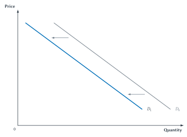
Figure 3.5. A decrease in demand. At every possible price, quantity demanded is smaller than before, so the whole demand curve shifts left.
Movement Along Demand Is Not A Demand Shift
This is the most important distinction in the demand section.
- If the price of iced coffee changes, move to another point on the existing demand curve.
- If something else changes buyers’ willingness or ability to buy iced coffee, shift the demand curve.
The price of iced coffee is already shown on the graph. The demand curve was built to show how buyers respond to that price. Shifting the curve because its own price changed would count the same change twice.
Common Mistake
Own Price Does Not Shift The Curve
A change in the price of the good itself causes movement along demand or supply. It does not shift either curve.
Why Demand Shifts
Lists of shifters are easier to remember when we first ask what changed for buyers.
Income changes buyers’ resources. For a normal good, higher income increases demand and lower income decreases demand. Restaurant meals, travel, and many other goods are normal for most buyers. For an inferior good, higher income decreases demand because buyers switch toward alternatives they prefer when they can afford them. “Inferior” describes the response to income. It does not mean that the good is defective or low quality.
Prices of related goods change the alternatives. Two goods are substitutes when a higher price for one increases demand for the other. If tea becomes more expensive, some buyers may switch to coffee. Two goods are complements when they are often used together, so a higher price for one decreases demand for the other. If game consoles become much more expensive, demand for games made only for those consoles may fall.
New information or a change in preferences changes what buyers value. A convincing health report may reduce demand for a product. A viral recommendation may increase it. We should not use “tastes changed” as an answer whenever we do not know what happened. First ask whether buyers received new information, faced a new alternative, or experienced another clear change.
Expectations change the timing of purchases. If buyers expect laptop prices to fall next month, some may wait, reducing demand today. If they expect a concert to sell out, demand for tickets today may rise.
The number of buyers changes market participation. When more students move near a campus, demand for nearby apartments may increase. If an app opens a seller’s products to buyers in another region, measured demand in the newly defined market may also increase.
| What Changes? | What Happens To The Demand Graph? |
|---|---|
| Price of the good itself | Movement along the demand curve |
| Income | Demand shifts |
| Price of a related good | Demand shifts |
| Information, tastes, or preferences | Demand shifts |
| Expectations | Demand shifts |
| Number of buyers | Demand shifts |
Table 3.4. What moves demand and what shifts it. Start with the first row: the good’s own price causes movement along demand. The other rows can shift the entire curve.
The direction of a shift depends on the event. Higher income raises demand for a normal good but lowers demand for an inferior good. A higher price for a substitute raises demand, while a higher price for a complement lowers it. Naming a shifter is only the first step. We must explain how it changes buyers’ choices.
Demand gives us the buyer side of the market. We now build the seller side in the same way: begin with one person’s choices, then add across people.
Supply Begins With Sellers’ Choices
Riley runs a small campus coffee stand. At low prices, preparing extra cups may not be worth the ingredients, time, and effort. At higher prices, selling more becomes worthwhile.
A supply schedule shows how much of a good a seller is willing and able to offer at different possible prices during a given period.
| Point | Price Per Cup | Cups Supplied Per Week |
|---|---|---|
| A | $2 | 0 |
| B | $3 | 1 |
| C | $4 | 2 |
| D | $5 | 3 |
| E | $6 | 4 |
| F | $7 | 5 |
| G | $8 | 6 |
Table 3.5. Riley’s weekly supply schedule. Each row shows the number of cups Riley would offer at a possible price, with other conditions unchanged.
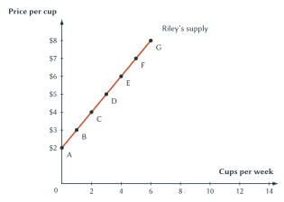
Figure 3.6. Riley’s supply of iced coffee. As the price rises, Riley is willing and able to sell more cups per week, with other conditions unchanged.
Supply is the whole relationship between price and the quantities a seller is willing and able to offer. Quantity supplied is the amount offered at one particular price.
The law of supply says that, with other conditions unchanged, a higher price leads to a greater quantity supplied. A higher reward makes producing and selling the good more attractive.
This does not require sellers to become greedier at higher prices. A higher price makes this product a more attractive use of scarce time and resources compared with other opportunities.
This result also follows from marginal reasoning. Riley supplies an additional cup when the price received is high enough to cover the cup’s additional cost, including the value of the time and resources used. As output expands, Riley may need extra preparation time, rush deliveries, or resources that could have been used elsewhere. A higher price makes more of those cups worth supplying.
If the price rises from $4 to $6, Riley moves from point C to point E and quantity supplied rises from two cups to four. This is movement along Riley’s supply curve. It is not an increase in supply.
Quick Concept
Supply Is Willingness To Sell
A supply curve shows how much sellers are willing and able to offer at different possible prices.
Key Point
Prices Change Choices
When a good’s own price changes, buying or selling it becomes more or less attractive compared with other choices. Buyers and sellers respond by moving to another point on the same curve.
A seller’s supply curve is not simply a count of goods already sitting on a shelf. It describes what the seller would choose to offer at several possible prices during the stated period.
From One Seller To Market Supply
Sam is a second iced-coffee seller. In this example, Sam supplies one more cup than Riley at each price.
| Point | Price Per Cup | Cups Supplied Per Week |
|---|---|---|
| A | $2 | 1 |
| B | $3 | 2 |
| C | $4 | 3 |
| D | $5 | 4 |
| E | $6 | 5 |
| F | $7 | 6 |
| G | $8 | 7 |
Table 3.6. Sam’s weekly supply schedule. Individual sellers may offer different quantities at the same price.
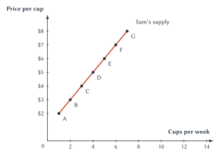
Figure 3.7. Sam’s supply of iced coffee. The same price can lead different sellers to offer different quantities.
Market supply uses the same addition rule as market demand. Hold price fixed and add the quantities supplied by each seller.
| Point | Price Per Cup | Riley | Sam | Market Quantity Supplied |
|---|---|---|---|---|
| A | $2 | 0 | 1 | 1 |
| B | $3 | 1 | 2 | 3 |
| C | $4 | 2 | 3 | 5 |
| D | $5 | 3 | 4 | 7 |
| E | $6 | 4 | 5 | 9 |
| F | $7 | 5 | 6 | 11 |
| G | $8 | 6 | 7 | 13 |
Table 3.7. Building market supply. At $5, Riley supplies 3 cups and Sam supplies 4, so market quantity supplied is \(3 + 4 = 7\) cups.
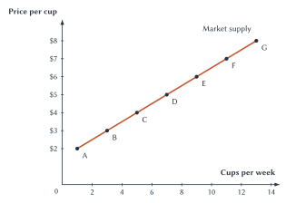
Figure 3.8. Market supply is the sum of individual supplies. At each price, the market curve adds the quantities offered by all sellers.
In a larger market, market supply adds choices across many firms, independent workers, farms, landlords, or other sellers. Which sellers are included depends on the product, place, and time period used to define the market.
When Supply Changes
Riley’s and Sam’s supply curves held input costs, equipment, weather, rules, and other conditions fixed. If one of those conditions changes, the entire supply curve may shift.
An increase in supply means sellers are willing and able to offer more at every possible price. The curve shifts to the right.
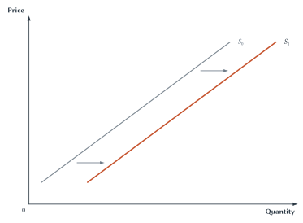
Figure 3.9. An increase in supply. At every possible price, quantity supplied is greater than before, so the whole supply curve shifts right.
A decrease in supply means sellers are willing and able to offer less at every possible price. The curve shifts to the left.
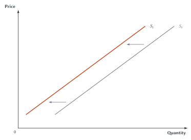
Figure 3.10. A decrease in supply. At every possible price, quantity supplied is smaller than before, so the whole supply curve shifts left.
Why Supply Shifts
Supply shifters change the cost or ability to produce, sellers’ plans, or the number of sellers in the market.
Input prices change production costs. Coffee beans, milk, cups, labor, electricity, and rented space are inputs for a coffee shop. If bean prices rise, selling any given number of cups becomes more costly. Supply decreases. If an important input becomes cheaper, supply may increase.
Technology and productivity change what resources can produce. A faster espresso machine allows a shop to prepare more drinks with the same workers and time. Supply increases. Technology does not have to be a machine. Better scheduling or a less wasteful production method can also raise productivity.
Expectations can change what sellers offer today. A seller who expects a much higher price next week may hold back inventory now, decreasing current supply. In other cases, expected future sales may lead firms to prepare more capacity. State what sellers expect and how it changes today’s choice.
The number of sellers changes market supply. If another coffee stand opens, market supply increases because its quantities are added to those of existing sellers. If a seller closes, market supply decreases.
This is different from movement along a supply curve. A higher price of iced coffee may cause Riley and Sam to offer more using their current operations. That is movement along market supply. If a higher price lasts long enough to attract new sellers, the number of sellers changes and market supply shifts.
Weather and other production shocks change what can be produced. Good growing conditions may increase the supply of coffee beans. A drought, storm, plant disease, or broken shipping link may decrease it.
Taxes, subsidies, and regulations can change sellers’ costs or opportunities. A per-cup tax may decrease supply, while a production subsidy may increase it. Later chapters study these policies in detail. For now, the key question is whether the rule changes the cost or ability to supply the good.
| What Changes? | What Happens To The Supply Graph? |
|---|---|
| Price of the good itself | Movement along the supply curve |
| Input prices | Supply shifts |
| Technology or productivity | Supply shifts |
| Expectations | Supply shifts |
| Number of sellers | Supply shifts |
| Weather or another production shock | Supply shifts |
| A tax, subsidy, or rule that changes production costs | Supply shifts |
Table 3.8. What moves supply and what shifts it. The good’s own price causes movement along supply. The other rows can shift the entire curve.
Key Point
Movement Versus Shift
A change in the good’s own price causes movement along a curve. A change in another important condition shifts the curve.
A Method For Diagnosing Market Events
Consider rideshare service after a large concert. Several events might occur, but they do not all change the same graph in the same way.
- Thousands of concertgoers request rides at once. More buyers enter the market, so demand shifts right.
- The city adds a fee that raises the cost of providing each ride. Seller costs rise, so supply shifts left.
- The app’s ride price rises. That is a change in the good’s own price, so riders and drivers move along their existing curves.
- More drivers sign on to the app. The number of sellers rises, so market supply shifts right.
- Riders hear that trains will continue running late. A substitute becomes more available, so demand for rides may shift left.
Notice what we have not yet done. We have not decided what the actual ride price will be or how many rides will occur. That requires putting demand and supply together, which is the job of Chapter 4.
Study And Learn
Diagnose The Graph Before Drawing It
Ask five questions in order:
- What happened?
- Does it affect buyers or sellers?
- Did the good’s own price change, or did something else change?
- Which curve is involved?
- If the curve shifts, does it move left or right?
For additional practice, use the Supply and Demand Shift Practice applet. The applet gives new events, but the five questions should remain the same.
Alfred Marshall And The Meaning Of A Curve
Historical Note
Economist Profile: Alfred Marshall
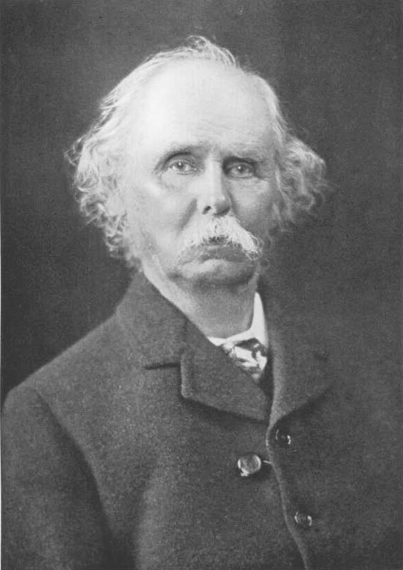
Alfred Marshall, photographed by Emery Walker in 1921.2
Alfred Marshall (1842-1924) helped make demand and supply schedules central tools of economics. His discussion emphasized alternative quantities at possible prices, the need to hold other conditions fixed, and the construction of market demand from individual buyers.3
Marshall’s larger lesson is the one used throughout this chapter: simplify one part of a complicated market long enough to understand it. A demand curve asks how buyers would respond to price while other important conditions stay the same. A supply curve asks the parallel question for sellers. The simplification is useful because it lets us study one relationship clearly before putting several relationships together.
Direction Is Not Magnitude
The law of demand predicts that buyers will purchase less when price rises. The law of supply predicts that sellers will offer more. These laws tell us the direction of the response. They do not tell us its size.
A small price increase might cause a large drop in quantity demanded, or almost no change. A higher price might bring forth a great deal of additional supply, or very little. The answer depends on the good, the available alternatives, the time buyers and sellers have to adjust, and other conditions.
Key Point
Direction Is Not Magnitude
The laws of demand and supply predict the usual direction of response to a price change. They do not tell us how large the response will be. Chapter 5 introduces elasticity to measure responsiveness.
Before measuring those responses, we need to answer a more immediate question. If buyers and sellers make separate plans, what price allows those plans to fit together? Chapter 4 places demand and supply on the same graph and explains how market prices adjust.
Chapter Study Map
Core Ideas
- Demand: the relationship between price and the quantities buyers are willing and able to purchase.
- Supply: the relationship between price and the quantities sellers are willing and able to offer.
- A curve as a set of what-if choices: each point changes the price while holding other important conditions fixed.
- Market curves: at each price, add the quantities chosen by all buyers or all sellers in the market.
- Movement along a curve: caused by a change in the good’s own price.
- Shift of a curve: caused by a change in another condition that affects buyers or sellers.
- Direction and size: the laws of demand and supply predict the usual direction of response, not how large it will be.
Diagrams And Tables
- Figures 3.1-3.3 and Tables 3.1-3.3: move from individual demand to market demand by adding quantities at the same price.
- Figures 3.4-3.5 and Table 3.4: distinguish movement along demand from a shift in demand.
- Figures 3.6-3.8 and Tables 3.5-3.7: move from individual supply to market supply by adding quantities at the same price.
- Figures 3.9-3.10 and Table 3.8: distinguish movement along supply from a shift in supply.
A Five-Step Check
- Identify the event.
- Decide whether it affects buyers or sellers.
- Ask whether the good’s own price changed.
- Choose demand, supply, or movement along a curve.
- If a curve shifts, state the direction and explain why.
Common Mistakes
- Reading a curve as a record of events over time.
- Treating desire without willingness and ability to buy as demand.
- Saying demand rose when only quantity demanded rose.
- Saying supply rose when only quantity supplied rose.
- Adding prices instead of quantities when constructing a market curve.
- Treating market demand or supply as an average.
- Assuming “inferior” means low quality.
- Naming a shifter without explaining its direction.
- Assuming the laws of demand and supply reveal how large a response will be.
Practice And Enrichment
- Use the chapter’s schedules to practice reading points and adding quantities.
- Use the supply-and-demand shift applet for new buyer-side and seller-side events.
- The Uber example shows how data can reveal choices at prices not currently observed.
- The Marshall profile explains why economists hold other conditions fixed when drawing a curve.
Review Questions
- What does a demand schedule show?
- Why is a demand curve a set of what-if choices rather than a timeline?
- State the law of demand and explain its basic logic.
- What is the difference between demand and quantity demanded?
- How is market demand constructed from individual demands?
- Why is this addition called horizontal summation?
- What is the difference between movement along demand and a shift in demand?
- Define normal good and inferior good. Why does “inferior” not mean low quality?
- Define substitutes and complements.
- Name five demand shifters.
- What does a supply schedule show?
- State the law of supply and explain its basic logic.
- What is the difference between supply and quantity supplied?
- How is market supply constructed from individual supplies?
- Name six conditions that can shift supply.
- Why can a lasting price increase eventually lead both to movement along supply and to a later shift in supply?
- What is econometrics, and why might economists need it to estimate a demand curve?
- Why do the laws of demand and supply predict direction but not magnitude?
Economic Reasoning Questions
- At a price of $4, one buyer demands 6 units, a second demands 3, and a third demands 0. What is market quantity demanded? Explain what must remain fixed while you add.
- The price of pizza falls and students buy more pizza. Is this a demand shift or movement along demand? Use the correct economic wording.
- Student income rises and demand for instant noodles falls. What does this suggest about instant noodles for these students?
- The price of tea rises and demand for coffee rises. What relationship between tea and coffee does this evidence suggest?
- The price of game consoles rises and demand for console-only games falls. What relationship between the two goods does this suggest?
- A new machine allows bakeries to make more bread with the same workers and ovens. Which curve changes, in which direction, and why?
- A drought reduces the coffee crop. Diagnose the event using the five-step check, but do not predict the final market price.
- The price of rideshare trips rises and more drivers accept trips. Explain why this is movement along supply rather than a supply shift.
- A rideshare app recruits 2,000 new drivers. Explain why this event differs from Question 8.
- A store observes that both the price and sales of umbrellas were higher in rainy weeks. Explain why those observations alone do not trace one demand curve.
- Give two reasonable definitions of the market for coffee. Explain how changing the market boundary changes which buyers and sellers are counted.
- Create one event that increases demand and one event that decreases supply for the same product. Identify the cause and direction of each shift without solving for the market outcome.